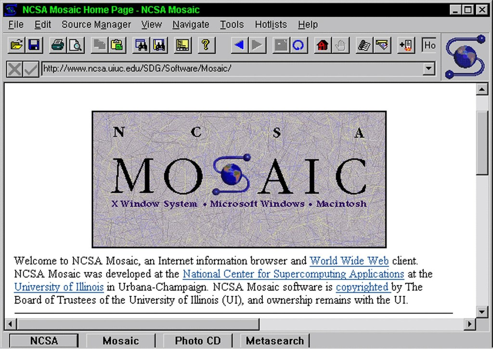
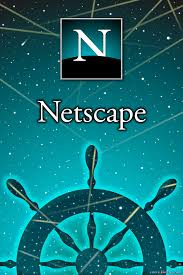
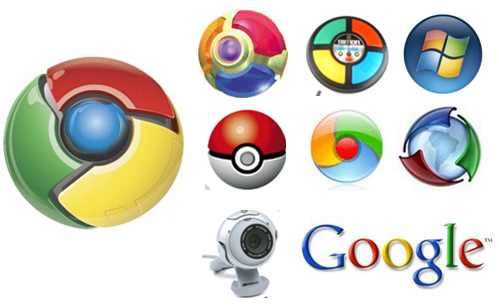
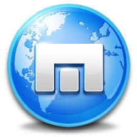
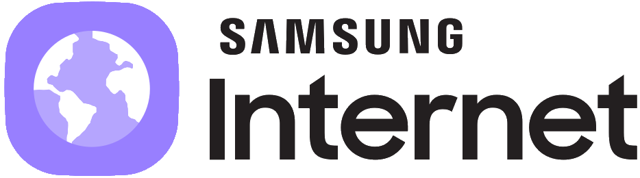

Worl Wide Web
Historia
Navegador creado en 1990 y principios del 91 por Tim Berners-Lee fue muy gráfico y sofisticado, solo funcionaba con Next(estaciones para brindar un servicio excepcional).
Evolución
- 2001: Fundación de Wikipedia, uno de los mejores ejemplos de la world wide web y su misión de información compartida.
- 2007: Presentación del Iphone, una creación que llevaría a otro nivel la conectividad de la world wide web.
Motor de renderizado
El motor de renderizado quw usaba era la clase Text de NextStep, y no se cambió en ningún momento.
Motor de JS
No tenía motorde JS ya que JaaScript no habíasalido hasta el momento.
Mosaic
Historia
Se lanzó en 1993 y fue el segundo navegador web de la historia para la visita de web en Windows. Creado por Marc Andressen.
Evolución
- 2001: Fundación de Wikipedia, uno de los mejores ejemplos de la world wide web y su misión de información compartida.
- 2007: Presentación del Iphone, una creación que llevaría a otro nivel la conectividad de la world wide web.
- 2008: Google publica la primera versión de Chrome, el navegador que se ha convertido en la referencia de internet hasta hoy.
Motor de renderizado
Gecko es un motor de renderizado libre escrito en C++ y originalmente desarrollado por Netscape. Pero cambio a Quantum el cual garantiza que tus datos se manejan con respeto y se mantienen privados
Motor de JS
SpiderMonkey
Netscape Navigator
Historia
Se lanzó en 1994, creado por Marc Andressen en el NCSA.
Evolución
- 1994: Irrupción de Netscape Navigator, que rápidamente se convirtió en el navegador más usado llegando al 80% de usuarios. Haciendo gratuita la disponibilidad de software.
- 1997: Netscape Navigator 2.0 fue el primer navegador en incluir un lenguaje Java Script en su versión 2.
Motor de renderizado
Funcionaba en entornos Unix sobre XFree86.
Motor de JS
El motor que usaba de JS era la versión 2, se usaba para validar formularios principalmente.
Internet Explorer
Historia
Su desarrollo lo llevo acabo Microsoft para el SO Windows a partir de 1995.
Evolución
- 1996: Aparición de Internet Explorer 3.0.
- 1999: Fue de los navegadores más usados.
- 2002-2003: Tuvo su pico en esos años con un 95% de los usuarios.
- 2012: Tuvo un bajón durante todo el año siendo su mejor un 54% de usuarios, pero empeoró hasta el 33%
Motor de renderizado
Funcionaba sobre entornos Trident a partir de su version 4 y ahora ese EdgeHTML.
Motor de JS
El motor es Chakra para JS.
Opera

Historia
Se lanzó en 1994 creado por la empresa Opera Software.
Evolución
- 2005: Se lanzó su versión 8.5 haciendola gratuita desde ese momento
Motor de renderizado
Empezó usando Presto, pero a lo largo de los años acabo usando WebKit, para un año más tarde descartarlo y unirse a Google para construir el motor Blink.
Motor de JS
Empezó usando Presto, pero a lo largo de los años acabo usando WebKit, para un año más tarde descartarlo y unirse a Google para construir el motor Blink.
Safari
Historia
Navegador presentado por primera vez en 2003 en la exposición MacWorld y de forma pública en Junio de ese mismo año.
Evolución
- 2003: La versión 1.1 se convirtió por defecto en el navegador predeterminado de Mac OS.
- 2005: Fue el primer navegador en pasar el test Acid2
- 2007: Safari sería usado como explorador predeterminado en el primer iPhone.
Motor de renderizado
WebKit es el motor de renderizado del navegador está basado en el motor KHTML, creado por el proyecto KDE para su navegador Konqueror. Como resultado de esto, el motor interno de Safari es software libre y es liberado bajo los términos de la licencia LGPL.
Motor de JS
Empezo con Nitro pero paso a JavaScriptCore el intérprete de inicio (LLInt), JIT de línea base, JIT de optimización de baja latencia (DFG) y JIT de optimización de alto rendimiento (FTL)
Firefox
Historia
Se lanzó la versión 1.0 en 2005 creado por Dave Hyatt y Blake Ross.
Evolución
- 1989: publicación de Information management: A proposal.
- 1991: Aparición de la primera página web, creada para describir el proyecto de la world wide web.
- 1993: Creación del primer navegador comercial llamado Mosaic.
- 1994: Irrupción de Netscape Navigator, que rápidamente se convirtió en el navegador más usado llegando al 80% de usuarios.
- 1996: Aparición de Internet Explorer 3.0.
- 1997: Creación de Google con un novedoso sistema de indexación y distribución de sitios web.
- 1998: Publicación de Open Diary, una plataforma de blogging que permitió los primeros comentarios de lectores en los blogposts.
- 2001: Fundación de Wikipedia, uno de los mejores ejemplos de la world wide web y su misión de información compartida.
- 2007: Presentación del Iphone, una creación que llevaría a otro nivel la conectividad de la world wide web.
- 2008: Google publica la primera versión de Chrome, el navegador que se ha convertido en la referencia de internet hasta hoy.
Motor de renderizado
Funcionaba sobre entornos Unix sobre XFree86.
Motor de JS
Chrome, Edge y Opera utilizan el motor Blink, Firefox usa Gecko y Safari emplea WebKit
Chrome
Historia
Desarrollado por google es un software de código abierto, compilado con varios componentes e infraestructuras de frameworks.
Evolución
- 2008: Google publica la primera versión de Chrome, el navegador que se ha convertido en la referencia de internet hasta hoy.
Motor de renderizado
Funcionaba sobre entornos Unix sobre XFree86.
Motor de JS
Chrome utiliza el motor Blink
Maxthon
Historia
Conocido hasta 2004 com MyIE2, y nació en el 2000 por Jeff Chense para mejorar Explorer 5.
Evolución
- 2007: Presentación del Iphone, una creación que llevaría a otro nivel la conectividad de la world wide web.
- 2008: Google publica la primera versión de Chrome, el navegador que se ha convertido en la referencia de internet hasta hoy.
Motor de renderizado
Su motor de renderizado estaba basado en Trident al principio y a partir de su versión 3 se utilizo WebKit que nació en el año 2000, per aún incluye también el motor de Trident de Internet Explorer, desde el 2010 uso Blink para acabar usando a partir de su versión 6 Chromium.
Motor de JS
No tiene.
Samsung Internet Android Browser
Historia
Samsung Internet reemplazó el navegador estándar de Android como predeterminado en los dispositivos Samsung Galaxy en 2012. A principios de 2013, se decidió basar el navegador en Chromium, y la primera versión basada en Chromium se envió con un modelo S4 más tarde ese año.
Evolución
- 2015: Desde 2015, ha estado disponible para su descarga desde Google Play, y recientemente también está disponible para su reloj inteligente basado en Tizen a través de Samsung Galaxy Store.
- 2016: Samsung estimó que tenía alrededor de 400 millones de usuarios activos mensuales.
- 2017: modo de alto contraste y modo nocturno, navegación de pestañas con un gesto de deslizar, un menú rápido. Modo secreto,, extensión de bloqueo de contenido
- 2018: Según StatCounter, tenía una cuota de mercado de alrededor del 4,98% (entre el 53,26% para todas las variantes de Chrome) alrededor de mayo, administrador de descargas y Bluetooth web habilitado de forma predeterminada.
- 2019: Asistente de video, un ícono de "Contáctenos", sincronización de datos de acceso rápido, un lector de código QR, control de reproducción automática de video, una función de cambio de nombre mientras se hace "agregar a la pantalla de inicio" y una función de pausa / reanudar para "Guardar todas las imágenes"
- 2020: Abra enlaces en modo secreto desde el menú contextual, más aplicaciones de administración de contraseñas pueden autocompletar ID y contraseñas, y mejoras de estabilidad y seguridad, Panel de control de seguridad para privacidad mejorada. Presenta Smart Protection, una tecnología para proteger a los usuarios contra las huellas dactilares. Búsqueda rápida y Navegación rápida para facilitar la búsqueda de información desde la pantalla de inicio.
Motor de renderizado
Usa Trident desde 1995.
Motor de JS
No tiene.